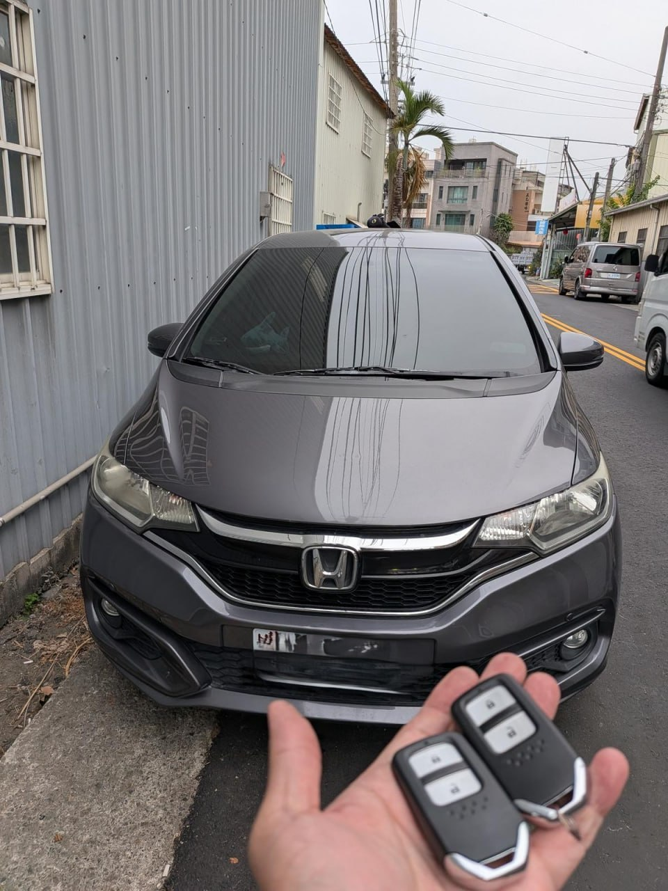

彰化田中 Honda Fit 智能鑰匙全丟：免拖吊現場發動

現場實拍：彰化田中 Honda Fit 智能鑰匙救援完成
不慎遺失最後一把 Honda Fit 智慧鑰匙？我們在彰化田中提供一站式現場解碼服務。
頂尖解碼工藝，現場資料重建
利用最新 Honda 解碼儀器，不需留車等待料件，現場直接讀取防盜模組並完成新鑰匙匹配，安全、快速、透明。

現場實拍：彰化田中 Honda Fit 智能鑰匙救援完成
不慎遺失最後一把 Honda Fit 智慧鑰匙？我們在彰化田中提供一站式現場解碼服務。
利用最新 Honda 解碼儀器，不需留車等待料件，現場直接讀取防盜模組並完成新鑰匙匹配，安全、快速、透明。